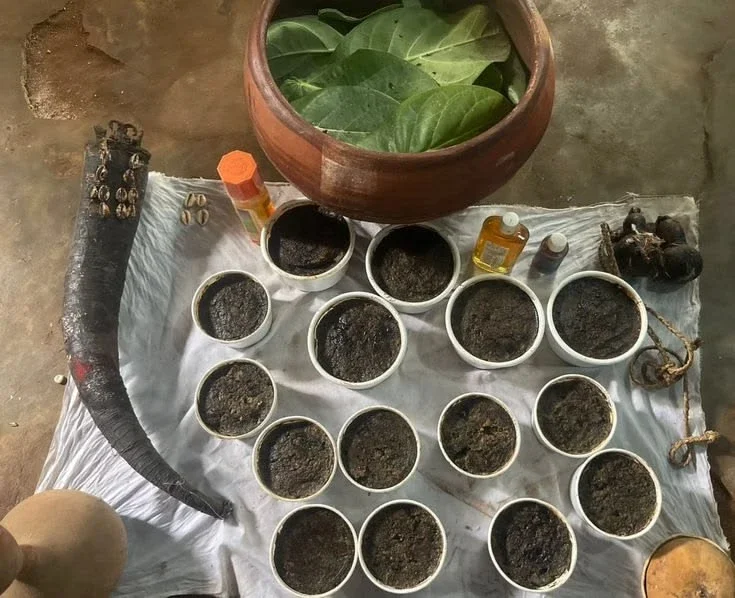
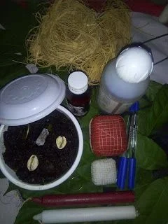

Cabinet de naturopathie et d'élévation spirituelle « La Pleine Lune »
Retrouvez l'équilibre, la clarté
et la sérénité intérieure
Depuis 10 ans, le médium voyant Adam Souabirou accompagne celles et ceux qui traversent une période de doute, de blocage ou de transition, grâce aux savoirs transmis par ses ancêtres.
- 10 ansannées de pratique
- 100%confidentiel
- Françaislangue de consultation
Le Médium
Une sagesse transmise de génération en génération
Né dans une famille de guides spirituels, Adam Souabirou a été initié dès l'enfance à la lecture des signes, à la connaissance des plantes et aux prières traditionnelles. Son enseignement lui a été transmis par son grand-père, puis approfondi auprès de plusieurs anciens respectés.
Aujourd'hui, il reçoit en cabinet et à distance des personnes de tous horizons. Son approche repose sur l'écoute, le respect de chacun et une parole honnête : il vous dit ce qu'il voit, sans flatterie et sans fausse promesse.
- Écoute bienveillante et sans jugement
- Secret absolu sur tout ce qui est confié
- Tarifs annoncés avant toute démarche
- Consultations en cabinet, par téléphone ou en visio
Services & produits
Tout ce que le cabinet vous propose
Consultations, produits spirituels, formations et accompagnement : choisissez une catégorie.
-
Interprétation des rêves
Comprendre les messages de vos rêves et ce qu'ils annoncent pour votre vie.
Réserver -
Consultation approfondie
Une lecture complète de votre vie : sources de blocages, dons spirituels, étoile, sacrifices, activités favorables à votre réussite, jours, heures et couleurs de chance, lignée et arbre de vie.
Réserver -
Consultation simple
Une réponse ciblée à une question précise : l'avenir d'une relation, d'un mariage, d'un voyage, d'une promotion ou d'une démarche administrative.
Réserver
Fabriqués à la main à base de plantes et d'écorces naturelles.
Savons
-
Savon de chance
Pour stimuler votre chance et attirer des opportunités inattendues.
Commander -
Savon de promotion
Pour gagner la faveur de vos supérieurs et favoriser votre promotion.
Commander -
Savon d'attirance
Pour être remarqué(e) et apprécié(e) des hommes ou des femmes de haut rang.
Commander -
Savon d'harmonie du couple
Pour favoriser la compréhension et éloigner les disputes inutiles.
Commander -
Savon d'amour
Pour raviver l'amour de votre partenaire et occuper ses pensées.
Commander -
Savon d'ouverture financière
Pour attirer les opportunités d'affaires et d'argent.
Commander -
Savon de déblocage et désenvoûtement
Pour nettoyer les attaques mystiques qui freinent votre évolution.
Commander -
Savon de protection
Pour restaurer votre aura et vous préserver des entités du bas astral.
Commander -
Savon de retour à l'envoyeur
Pour dresser une barrière contre les attaques mystiques et renvoyer le mal à son expéditeur.
Commander
Parfums
-
Parfum de charme
Pour révéler votre beauté et votre pouvoir d'attraction.
Commander -
Parfum de chance extrême
Pour accompagner votre chance au quotidien.
Commander -
Parfum d'ouverture et d'opportunités
Pour multiplier les contacts et décrocher de gros marchés.
Commander -
Parfum de clientèle
Pour attirer la clientèle et favoriser la vente de vos marchandises.
Commander -
Parfum de visibilité
Pour gagner en visibilité et en audience sur les réseaux sociaux.
Commander -
Parfum lumière
Pour les hommes et femmes d'affaires qui visent les grands marchés.
Commander
Disponibles sur commande — prix et livraison communiqués sur WhatsApp. Ces produits sont des supports spirituels traditionnels : ils ne remplacent pas un avis ou un traitement médical.
Produits préparés à partir des codes des Psaumes, de la Thora et des sourates du Coran.
Huiles
-
Huile d'ouverture et de chance
Pour attirer les opportunités de toutes parts au quotidien.
Commander -
Huile de protection de la maison
Pour éloigner les ondes négatives de votre foyer.
Commander -
Huile de combat spirituel
Pour détruire les foyers négatifs établis contre vous.
Commander
Eaux bénites coraniques
-
Eau de l'intelligence
Pour favoriser la mémoire et bien retenir ses cours.
Commander -
Eau du commerce
Pour dynamiser votre commerce, en ligne comme en boutique.
Commander -
Eau des champs
Pour la bonne marche de vos cultures et de vos récoltes.
Commander -
Eau de promotion et d'élévation
Pour accompagner votre avancement professionnel.
Commander -
Eau de prospérité
Pour la prospérité de vos affaires.
Commander
Amulettes & talismans de la Thora
-
Amulette de gloire
Pour la gloire et la bonne marche de vos activités.
Commander -
Amulette de haute protection
Une protection spirituelle de haut niveau.
Commander -
Talisman d'invisibilité
Pour rester hors d'atteinte des attaques mystiques.
Commander
Bagues
-
Bague de la Thora de richesse
Pour attirer l'abondance et la richesse.
Commander -
Bague de la Thora de protection
Protection spirituelle contre les accidents et les agressions.
Commander -
Bague du psaume de l'influence
Pour l'influence et la notoriété.
Commander
Croix du psaume
-
Croix de richesse
Pour ouvrir les portes de l'abondance.
Commander -
Croix de protection et de déblocage
Pour vous protéger et lever ce qui vous bloque.
Commander -
Croix de chance extrême
Pour une chance renforcée au quotidien.
Commander -
Croix de vérité
Pour démasquer les complots et la trahison.
Commander
Bougies du psaume
-
Bougie d'élévation et d'exaucement
Pour l'élévation spirituelle et l'exaucement de vos prières.
Commander -
Bougie de chance
Pour attirer la chance.
Commander
Disponibles sur commande — prix et livraison communiqués sur WhatsApp. Ces produits sont des supports spirituels traditionnels : ils ne remplacent pas un avis ou un traitement médical.
-
Spiritualité ancestrale africaine (Vaudou)
Connaissance des plantes, des racines et des feuilles.
S'inscrire -
Maraboutage
Carré magique, tableau magique et géomancie.
S'inscrire -
Spiritualité hindoue
Initiation à la spiritualité de Shiva.
S'inscrire -
Les trois religions abrahamiques
Spiritualité du judaïsme, du christianisme et de l'islam.
S'inscrire -
Préparation de savons, parfums et poudres
Fabrication à base de plantes et de feuilles.
S'inscrire
-
Développement spirituel personnel
Un suivi régulier pour grandir spirituellement.
Prendre contact -
Accompagnement du couple
Un accompagnement spirituel pour renforcer votre union.
Prendre contact -
Suivi spirituel des enfants
Encadrement spirituel des enfants de 0 à 14 ans, avec l'accord et en présence des parents.
Prendre contact -
Bénédiction de lieux
Lecture du Coran et des Psaumes pour attirer les ondes positives dans une nouvelle boutique, maison ou magasin.
Prendre contact -
Installation d'un égrégore
Mise en place d'un égrégore puissant pour veiller sur votre vie.
Prendre contact -
Désir d'enfant
Accompagnement spirituel des couples qui souhaitent un enfant, en complément du suivi médical.
Prendre contact -
Troubles d'ordre spirituel
Accompagnement des troubles d'origine spirituelle, en complément d'un suivi médical.
Prendre contact
Démarche
Comment se déroule l'accompagnement
-
01
Premier contact
Vous écrivez ou appelez. Nous fixons ensemble un rendez-vous, en cabinet ou à distance.
-
02
Consultation
Le médium vous écoute, consulte les signes et vous livre son analyse avec franchise.
-
03
Proposition claire
Si un travail est utile, il vous est expliqué avec son tarif. Vous restez libre de votre choix.
-
04
Suivi
Un suivi est assuré pour faire le point et vous accompagner dans la durée.
Le cabinet en images
Au cœur de La Pleine Lune


Confidentialité
Rien de ce que vous confiez ne sort du cabinet. Jamais.
Honnêteté
Aucune promesse miracle : un accompagnement sincère, fondé sur la tradition.
Respect
Aucun travail visant à nuire à autrui. Seulement la protection et l'harmonie.
Transparence
Le prix est toujours annoncé avant. Aucun frais caché, aucune relance insistante.
Témoignages
Ils nous ont fait confiance
Questions fréquentes
Vous vous posez des questions ?
Les consultations à distance sont-elles possibles ?
Oui. Le médium consulte par téléphone, WhatsApp ou visio pour les personnes qui ne peuvent pas se déplacer, en Côte d'Ivoire, au Bénin comme à l'étranger.
Combien coûte une consultation ?
Le tarif de la consultation vous est communiqué lors de la prise de rendez-vous. Tout travail complémentaire fait l'objet d'un devis expliqué à l'avance, que vous êtes libre d'accepter ou non.
Les résultats sont-ils garantis ?
Non, et personne d'honnête ne peut le promettre. Le médium s'engage à travailler avec sérieux et sincérité, selon la tradition, et à vous dire la vérité sur ce qu'il voit.
Puis-je consulter pour un problème de santé ?
L'accompagnement spirituel ne remplace en aucun cas un avis médical. Pour tout problème de santé, consultez un médecin ; le médium peut vous accompagner en complément, jamais à la place d'un traitement.
Mes informations restent-elles confidentielles ?
Absolument. Tout ce qui est échangé reste strictement entre vous et le médium.
Retour affectif, protection, chance, blocages ?
Adam Souabirou vous écoute et vous accompagne, en toute discrétion.
Contact
Prenez rendez-vous en toute discrétion
Décrivez brièvement votre situation : vous recevrez une réponse personnelle sous 24 h.
- Téléphone · appels +225 07 97 26 12 42
- WhatsApp +225 07 97 26 12 42
- Cabinet Siège : Bouaké, Côte d'Ivoire · Annexe : Bénin
- E-mail contact@exemple.fr
-
Horaires
Lundi 8 h – 19 h Mardi 8 h – 17 h Mercredi 8 h – 17 h Jeudi 8 h – 18 h Vendredi 15 h – 20 h Samedi 8 h – 18 h Dimanche 8 h – 18 h